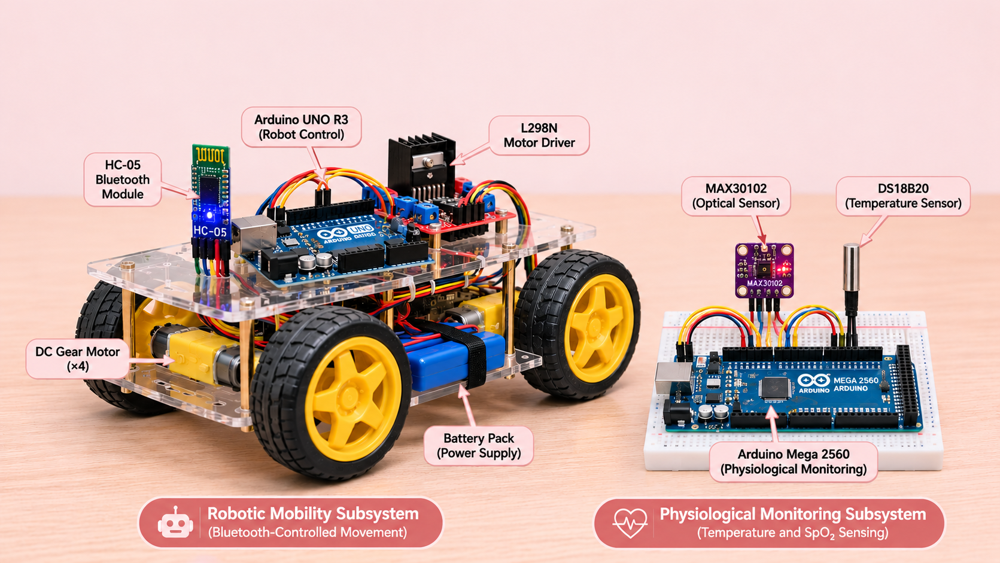
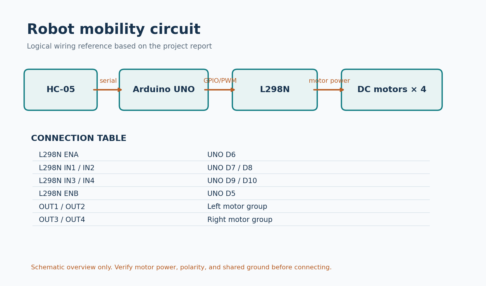
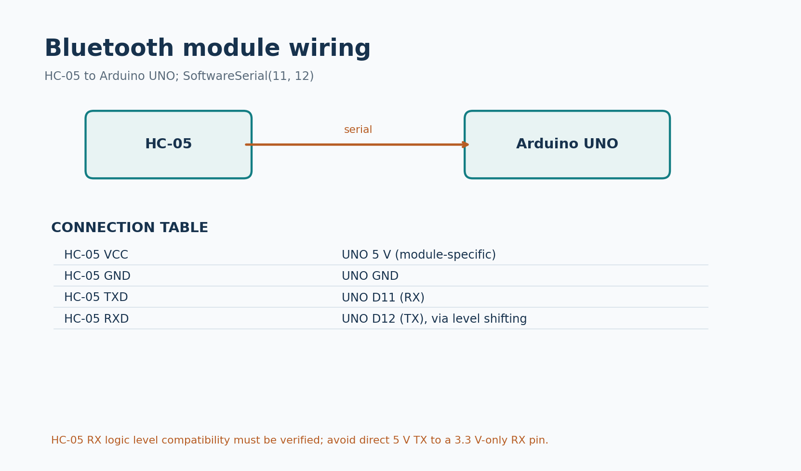
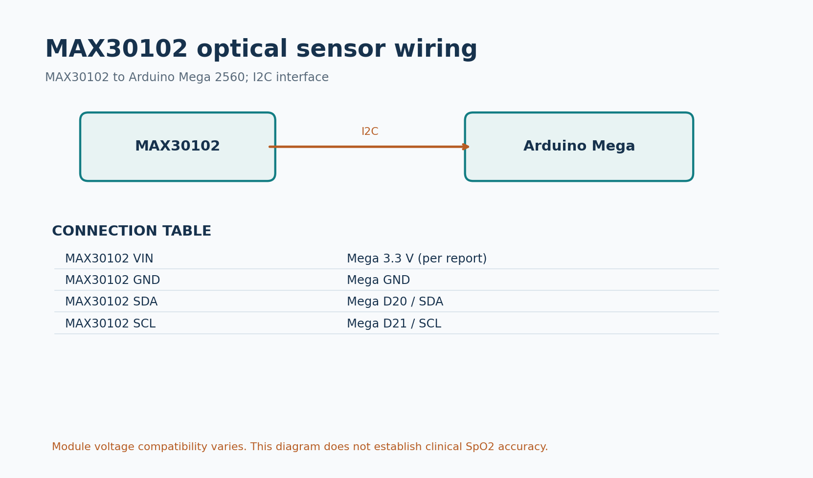
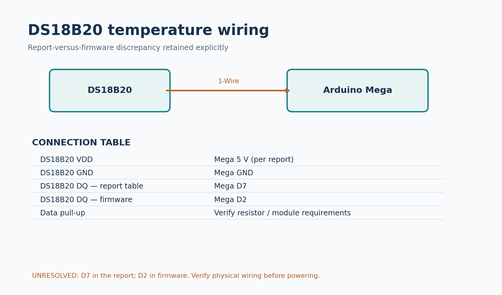

Smart Medical
Assistance Robot
An Arduino-based educational prototype integrating Bluetooth-controlled robotic mobility, digital temperature sensing, and MAX30102 optical physiological monitoring.

Conceptual hardware visualization; not an actual prototype photograph.
Project at a glance
The system combines a four-wheel mobile robotic platform with a separate Arduino-based physiological monitoring unit. It demonstrates the integration of wireless communication, motor control, and biomedical sensors.
Wireless Mobility
Bluetooth directional commands are processed by an Arduino UNO to control four DC motors through an L298N.
Temperature Sensing
A DS18B20 sensor provides digital temperature readings to the Arduino Mega monitoring subsystem.
Optical Monitoring
MAX30102 optical samples support SpO2 estimation. Displayed BPM values in the supplied firmware are simulated.
System architecture
Robotic Mobility
Directional movement and predefined PWM speed control.
Physiological Monitoring
Temperature acquisition and optical sample processing.
Hardware and circuit illustrations
Regenerated logical diagrams based on the project documentation. These are explanatory illustrations, not verified electrical schematics.




Hardware and firmware
| Subsystem | Technology |
|---|---|
| Robot controller | Arduino UNO R3 |
| Monitoring controller | Arduino Mega 2560 |
| Wireless communication | HC-05 |
| Motor actuation | L298N + four DC motors |
| Optical sensing | MAX30102 |
| Temperature sensing | DS18B20 |
What the project demonstrates
The source report describes Bluetooth-controlled robot movement, temperature monitoring, optical sensor integration, and serial/Bluetooth output. Independent compilation, reproducibility, sensor accuracy, and clinical performance have not been established.
This system is an educational prototype and must not be used for clinical diagnosis or patient monitoring.
Explore the technical repository
Detailed architecture, methodology, hardware specifications, source code, limitations, and attribution are available on GitHub.